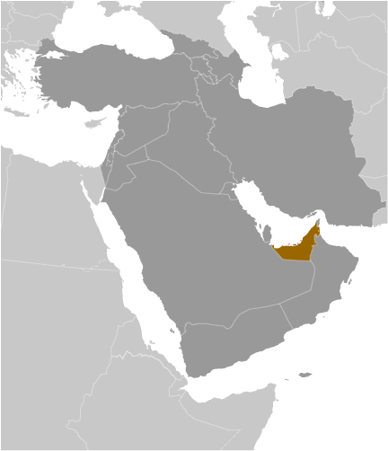
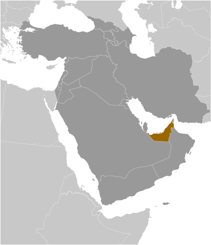

Middle East :: UNITED ARAB EMIRATES
Introduction :: UNITED ARAB EMIRATES
-
The Trucial States of the Persian Gulf coast granted the UK control of their defense and foreign affairs in 19th century treaties. In 1971, six of these states - Abu Dhabi, 'Ajman, Al Fujayrah, Ash Shariqah, Dubayy, and Umm al Qaywayn - merged to form the United Arab Emirates (UAE). They were joined in 1972 by Ra's al Khaymah. The UAE's per capita GDP is on par with those of leading West European nations. For more than three decades, oil and global finance drove the UAE's economy. However, in 2008-09, the confluence of falling oil prices, collapsing real estate prices, and the international banking crisis hit the UAE especially hard. The UAE essentially avoided the "Arab Spring" unrest seen elsewhere in the Middle East in 2010-11 and in an effort to stem potential unrest, the government announced a multi-year, $1.6-billion infrastructure investment plan for the poorer northern emirates and aggressively pursued advocates of political reform. The UAE in recent years has played a vital role in regional affairs. In addition to donating billions of dollars in economic aid to help stabilize Egypt, the UAE is a member of a US-led global coalition to defeat the Islamic State in Iraq and the Levant (ISIL) and a coalition partner in a Saudi-led military campaign to restore the government of Yemen.
Geography :: UNITED ARAB EMIRATES
-
Middle East, bordering the Gulf of Oman and the Persian Gulf, between Oman and Saudi Arabia24 00 N, 54 00 EMiddle Easttotal: 83,600 sq kmland: 83,600 sq kmwater: 0 sq kmcountry comparison to the world: 116slightly larger than South Carolina; slightly smaller than Mainetotal: 1,066 kmborder countries (2): Oman 609 km, Saudi Arabia 457 km1,318 kmterritorial sea: 12 nmcontiguous zone: 24 nmexclusive economic zone: 200 nmcontinental shelf: 200 nm or to the edge of the continental margindesert; cooler in eastern mountainsflat, barren coastal plain merging into rolling sand dunes of vast desert; mountains in eastmean elevation: 149 melevation extremes: lowest point: Persian Gulf 0 mhighest point: Jabal Yibir 1,527 mpetroleum, natural gasagricultural land: 4.6%arable land 0.5%; permanent crops 0.5%; permanent pasture 3.6%forest: 3.8%other: 91.6% (2011 est.)923 sq km (2012)population is heavily concentrated to the northeast on the Musandam Peninsula; the three largest emirates - Abu Dhabi, Dubai, and Sharjah - are home to nearly 85% of the populationfrequent sand and dust stormslack of natural freshwater resources compensated by desalination plants; desertification; beach pollution from oil spillsparty to: Biodiversity, Climate Change, Climate Change-Kyoto Protocol, Desertification, Endangered Species, Hazardous Wastes, Marine Dumping, Ozone Layer Protectionsigned, but not ratified: Law of the Seastrategic location along southern approaches to Strait of Hormuz, a vital transit point for world crude oil
People and Society :: UNITED ARAB EMIRATES
-
6,072,475 (July 2017 est.)note: the UN estimated the country's total population was 9,400,145 as of mid-year 2017; immigrants make up about 88% of the total population, according to 2015 UN data (2016)country comparison to the world: 110noun: Emirati(s)adjective: EmiratiEmirati 11.6%, South Asian 59.4% (includes Indian 38.2%, Bangladeshi 9.5%, Pakistani 9.4%, other 2.3%), Egyptian 10.2%, Philippine 6.1%, other 12.8% (2015 est.)Arabic (official), Persian, English, Hindi, UrduMuslim (official) 76%, Christian 9%, other (primarily Hindu and Buddhist, less than 5% of the population consists of Parsi, Baha'i, Druze, Sikh, Ahmadi, Ismaili, Dawoodi Bohra Muslim, and Jewish) 15%note: represents the total population; about 85% of the population consists of noncitizens (2005 est.)0-14 years: 21.01% (male 652,718/female 622,850)15-24 years: 13.51% (male 487,558/female 332,829)25-54 years: 61.14% (male 2,828,731/female 884,233)55-64 years: 3.27% (male 147,429/female 51,097)65 years and over: 1.07% (male 40,226/female 24,804) (2017 est.)total dependency ratio: 17.4youth dependency ratio: 16.2elderly dependency ratio: 1.2potential support ratio: 83.4 (2015 est.)total: 30.3 yearsmale: 32.1 yearsfemale: 25 years (2017 est.)country comparison to the world: 1122.37% (2017 est.)country comparison to the world: 2615.1 births/1,000 population (2017 est.)country comparison to the world: 1281.9 deaths/1,000 population (2017 est.)country comparison to the world: 22510.5 migrant(s)/1,000 population (2017 est.)country comparison to the world: 10population is heavily concentrated to the northeast on the Musandam Peninsula; the three largest emirates - Abu Dhabi, Dubai, and Sharjah - are home to nearly 85% of the populationurban population: 86.1% of total population (2017)rate of urbanization: 2.32% annual rate of change (2015-20 est.)Dubai 2.415 million; Sharjah 1.279 million; ABU DHABI (capital) 1.145 million (2015)at birth: 1.05 male(s)/female0-14 years: 1.05 male(s)/female15-24 years: 1.47 male(s)/female25-54 years: 3.2 male(s)/female55-64 years: 2.93 male(s)/female65 years and over: 1.69 male(s)/femaletotal population: 2.18 male(s)/female (2016 est.)6 deaths/100,000 live births (2015 est.)country comparison to the world: 165total: 10 deaths/1,000 live birthsmale: 11.6 deaths/1,000 live birthsfemale: 8.3 deaths/1,000 live births (2017 est.)country comparison to the world: 137total population: 77.7 yearsmale: 75 yearsfemale: 80.4 years (2017 est.)country comparison to the world: 692.32 children born/woman (2017 est.)country comparison to the world: 873.6% of GDP (2014)country comparison to the world: 1711.56 physicians/1,000 population (2014)1.1 beds/1,000 population (2012)improved:urban: 99.6% of populationrural: 100% of populationtotal: 99.6% of populationunimproved:urban: 0.4% of populationrural: 0% of populationtotal: 0.4% of population (2015 est.)improved:urban: 98% of populationrural: 95.2% of populationtotal: 97.6% of populationunimproved:urban: 2% of populationrural: 4.8% of populationtotal: 2.4% of population (2015 est.)NANANA31.7% (2016)country comparison to the world: 20NAdefinition: age 15 and over can read and writetotal population: 93.8%male: 93.1%female: 95.8% (2015 est.)total: 12.1%male: 7.9%female: 21.8% (2008 est.)country comparison to the world: 91
Government :: UNITED ARAB EMIRATES
-
conventional long form: United Arab Emiratesconventional short form: nonelocal long form: Al Imarat al Arabiyah al Muttahidahlocal short form: noneformer: Trucial Oman, Trucial Statesabbreviation: UAEetymology: self-descriptive country name; the name "Arabia" can be traced back many centuries B.C., the ancient Egyptians referred to the region as "Ar Rabi"; "emirates" derives from "amir" the Arabic word for "commander," "lord," or "prince"federation of monarchiesname: Abu Dhabigeographic coordinates: 24 28 N, 54 22 Etime difference: UTC+4 (9 hours ahead of Washington, DC, during Standard Time)7 emirates (imarat, singular - imarah); Abu Zaby (Abu Dhabi), 'Ajman, Al Fujayrah, Ash Shariqah (Sharjah), Dubayy (Dubai), Ra's al Khaymah, Umm al Qaywayn2 December 1971 (from the UK)Independence Day (National Day), 2 December (1971)history: previous 1971 (provisional); latest drafted in 1979, became permanent May 1996amendments: proposed by the Supreme Council and submitted to the Federal National Council; passage requires at least a two-thirds majority vote of Federal National Council members present, and approval by the Supreme Council president; amended 2009 (2016)mixed legal system of Islamic law and civil lawhas not submitted an ICJ jurisdiction declaration; non-party state to the ICCtcitizenship by birth: nocitizenship by descent only: the father must be a citizen of the United Arab Emirates; if the father is unknown, the mother must be a citizendual citizenship recognized: noresidency requirement for naturalization: 30 yearslimited; note - rulers of the seven emirates each select a proportion of voters for the Federal National Council (FNC) that together account for about 12 percent of Emirati citizenschief of state: President KHALIFA bin Zayid Al-Nuhayyan (since 3 November 2004), ruler of Abu Zaby (Abu Dhabi) (since 4 November 2004); Vice President and Prime Minister MUHAMMAD BIN RASHID Al-Maktum (since 5 January 2006)head of government: Prime Minister Vice President MUHAMMAD BIN RASHID Al-Maktum (since 5 January 2006); Deputy Prime Ministers SAIF bin Zayid Al-Nuhayyan, MANSUR bin Zayid Al-Nuhayyan (both since 11 May 2009)cabinet: Council of Ministers announced by the prime minister and approved by the presidentelections/appointments: president and vice president indirectly elected by the Federal Supreme Council - composed of the rulers of the 7 emirates - for a 5-year term (no term limits); election last held 3 November 2009 (next election NA); prime minister and deputy prime minister appointed by the presidentelection results: KHALIFA bin Zayid Al-Nuhayyan reelected president; FSC vote NAnote: there is also a Federal Supreme Council (FSC) composed of the 7 emirate rulers; the FSC is the highest constitutional authority in the UAE; establishes general policies and sanctions federal legislation; meets 4 times a year; Abu Zaby (Abu Dhabi) and Dubayy (Dubai) rulers have effective veto powerdescription: unicameral Federal National Council (FNC) or Majlis al-Ittihad al-Watani (40 seats; 20 members indirectly elected by an electoral college whose members are selected by each emirate ruler proportional to its FNC membership, and 20 members appointed by the rulers of the 7 constituent states; members serve 4-year terms)elections: last held on 3 October 2015 (next to be held in 2019); note - the electoral college was expanded from 129,274 electors in the December 2011 election to 224,279 in the October 2015 election; 347 candidates including 78 women ran for 20 contested seats in the 40-member FNCelection results: 19 men and 1 woman were elected; seats by emirate - Abu Dhabi 4, Dubai 4, Sharjah 3, Ras al-Khaimah 3, Ajman 2, Fujairah 2, Umm al-Quwain 2; note - only 1 woman (from Ras Al Khaimah) won an FNC seathighest court(s): Federal Supreme Court (consists of the court president and 4 judges; jurisdiction limited to federal cases)judge selection and term of office: judges appointed by the federal president following approval by the Federal Supreme Council, the highest executive and legislative authority consisting of the 7 emirate rulers; judges serve until retirement age or the expiry of their appointment termssubordinate courts: Federal Court of Cassation (determines the constitutionality of laws promulgated at the federal and emirate level; federal level courts of first instance and appeals courts; the emirates of Abu Dhabi, Dubai, and Ra's al Khaymah have parallel court systems; the other 4 emirates have incorporated their courts into the federal system; note - the Abu Dhabi Global Market (ADGM) Courts and the Dubai International Financial Center (DIFC) Courts both adjudicate civil and commercial disputes.none; political parties are bannedNAABEDA, AfDB (nonregional member), AFESD, AMF, BIS, CAEU, CICA, FAO, G-77, GCC, IAEA, IBRD, ICAO, ICC (national committees), ICRM, IDA, IDB, IFAD, IFC, IFRCS, IHO, ILO, IMF, IMO, IMSO, Interpol, IOC, IPU, ISO, ITSO, ITU, LAS, MIGA, NAM, OAPEC, OIC, OIF (observer), OPCW, OPEC, PCA, UN, UNCTAD, UNESCO, UNIDO, UNRWA, UNWTO, UPU, WCO, WHO, WIPO, WMO, WTOchief of mission: Ambassador Yusif bin Mani bin Said al-UTAYBA (since 28 July 2008)chancery: 3522 International Court NW, Suite 400, Washington, DC 20008telephone: [1] (202) 243-2400FAX: [1] (202) 243-2432consulate(s) general: Boston, Los Angeles, New Yorkchief of mission: Ambassador Barbara A. LEAF (since 17 November 2014)embassy: Embassies District, Plot 38 Sector W59-02, Street No. 4, Abu Dhabimailing address: P. O. Box 4009, Abu Dhabitelephone: [971] (2) 414-2200FAX: [971] (2) 414-2603consulate(s) general: Dubaithree equal horizontal bands of green (top), white, and black with a wider vertical red band on the hoist side; the flag incorporates all four Pan-Arab colors, which in this case represent fertility (green), neutrality (white), petroleum resources (black), and unity (red); red was the traditional color incorporated into all flags of the emirates before their unificationgolden falcon; national colors: green, white, black, redname: "Nashid al-watani al-imarati" (National Anthem of the UAE)lyrics/music: AREF Al Sheikh Abdullah Al Hassan/Mohamad Abdel WAHABnote: music adopted 1971, lyrics adopted 1996; Mohamad Abdel WAHAB also composed the music for the anthem of Tunisia
Economy :: UNITED ARAB EMIRATES
-
The UAE has an open economy with a high per capita income and a sizable annual trade surplus. Successful efforts at economic diversification have reduced the portion of GDP from the oil and gas sector to 30%.Since the discovery of oil in the UAE nearly 60 years ago, the country has undergone a profound transformation from an impoverished region of small desert principalities to a modern state with a high standard of living. The government has increased spending on job creation and infrastructure expansion and is opening up utilities to greater private sector involvement. The country's free trade zones - offering 100% foreign ownership and zero taxes - are helping to attract foreign investors.The global financial crisis of 2008-09, tight international credit, and deflated asset prices constricted the economy in 2009. UAE authorities tried to blunt the crisis by increasing spending and boosting liquidity in the banking sector. The crisis hit Dubai hardest, as it was heavily exposed to depressed real estate prices. Dubai lacked sufficient cash to meet its debt obligations, prompting global concern about its solvency and ultimately a $20 billion bailout from the UAE Central Bank and Abu Dhabi Government that was refinanced in March 2014.The UAE’s dependence on oil is a significant long-term challenge. Low oil prices have prompted the UAE to cut expenditures, including on some social programs, but the UAE has sufficient assets in its sovereign investment funds to cover its deficits. The government reduced fuel subsidies in August 2015, and has announced plans to introduce excise and value-added taxes by January 1, 2018. The UAE's strategic plan for the next few years focuses on economic diversification, promoting the UAE as a global trade and tourism hub, developing industry, and creating more job opportunities for nationals through improved education and increased private sector employment.$671.1 billion (2016 est.)$643.1 billion (2015 est.)$612.8 billion (2014 est.)note: data are in 2016 dollarscountry comparison to the world: 33$348.7 billion (2016 est.)3% (2016 est.)3.8% (2015 est.)3.3% (2014 est.)country comparison to the world: 107$68,100 (2016 est.)$68,000 (2015 est.)$67,400 (2014 est.)note: data are in 2016 dollarscountry comparison to the world: 1427.5% of GDP (2016 est.)29.7% of GDP (2015 est.)34.4% of GDP (2014 est.)country comparison to the world: 34household consumption: 58.5%government consumption: 14%investment in fixed capital: 23.6%investment in inventories: -13%exports of goods and services: 103.8%imports of goods and services: -87% (2016 est.)agriculture: 0.8%industry: 39.5%services: 40.1% (2016 est.)dates, vegetables, watermelons; poultry, eggs, dairy products; fishpetroleum and petrochemicals; fishing, aluminum, cement, fertilizer, commercial ship repair, construction materials, handicrafts, textiles1.9% (2016 est.)country comparison to the world: 1165.242 millionnote: expatriates account for about 85% of the workforce (2016 est.)country comparison to the world: 79agriculture: 7%industry: 15%services: 78% (2000 est.)3.6% (2014 est.)2.4% (2001 est.)country comparison to the world: 3819.5% (2003 est.)lowest 10%: NA%highest 10%: NA%revenues: $78.46 billionexpenditures: $105.5 billionnote: the UAE federal budget does not account for emirate-level spending in Abu Dhabi and Dubai (2016 est.)21.1% of GDP (2016 est.)country comparison to the world: 142-7.3% of GDP (2016 est.)country comparison to the world: 18762.7% of GDP (2016 est.)53.1% of GDP (2015 est.)country comparison to the world: 66calendar year1.8% (2016 est.)4.1% (2015 est.)country comparison to the world: 120NA%$129 billion (31 December 2016 est.)$124.4 billion (31 December 2015 est.)country comparison to the world: 30$333.6 billion (31 December 2016 est.)$323.1 billion (31 December 2015 est.)country comparison to the world: 29$389.9 billion (31 December 2016 est.)$370.7 billion (31 December 2015 est.)country comparison to the world: 30$195.9 billion (31 December 2015 est.)$201.6 billion (31 December 2014 est.)$180.3 billion (31 December 2013 est.)country comparison to the world: 33$8.412 billion (2016 est.)$17.25 billion (2015 est.)country comparison to the world: 22$298.6 billion (2016 est.)$300.4 billion (2015 est.)country comparison to the world: 17crude oil 45%, natural gas, reexports, dried fish, dates (2012 est.)India 9.9%, Iran 8.9%, Japan 8.8%, Switzerland 8.5%, Oman 5.4%, China 5.1% (2016)$230.3 billion (2016 est.)$223.9 billion (2015 est.)country comparison to the world: 20machinery and transport equipment, chemicals, foodChina 7.4%, US 6.9%, India 6.8%, Germany 4.4% (2016)$85.39 billion (31 December 2016 est.)$93.93 billion (31 December 2015 est.)country comparison to the world: 28$218.7 billion (31 December 2016 est.)$202.1 billion (31 December 2015 est.)country comparison to the world: 34$134.8 billion (31 December 2016 est.)$125.8 billion (31 December 2015 est.)country comparison to the world: 39$114.6 billion (31 December 2016 est.)$101 billion (31 December 2015 est.)country comparison to the world: 33Emirati dirhams (AED) per US dollar -3.673 (2016 est.)3.673 (2015 est.)3.673 (2014 est.)3.673 (2013 est.)3.67 (2012 est.)
Energy :: UNITED ARAB EMIRATES
-
population without electricity: 177,824electrification - total population: 98%electrification - urban areas: 99%electrification - rural areas: 93% (2012)119.7 billion kWh (2015 est.)country comparison to the world: 32110.6 billion kWh (2015 est.)country comparison to the world: 320 kWh (2016 est.)country comparison to the world: 980 kWh (2016 est.)country comparison to the world: 11828.9 million kW (2015 est.)country comparison to the world: 3499.5% of total installed capacity (2015 est.)country comparison to the world: 290% of total installed capacity (2015 est.)country comparison to the world: 350% of total installed capacity (2015 est.)country comparison to the world: 1580.5% of total installed capacity (2015 est.)country comparison to the world: 1503.106 million bbl/day (2016 est.)country comparison to the world: 82.684 million bbl/day (2014 est.)country comparison to the world: 40 bbl/day (2014 est.)country comparison to the world: 8997.8 billion bbl (1 January 2017 es)country comparison to the world: 7479,400 bbl/day (2014 est.)country comparison to the world: 33901,000 bbl/day (2015 est.)country comparison to the world: 25334,900 bbl/day (2014 est.)country comparison to the world: 26413,700 bbl/day (2014 est.)country comparison to the world: 2260.18 billion cu m (2015 est.)country comparison to the world: 15186 billion cu m (2015 est.)country comparison to the world: 811.08 billion cu m (2015 est.)country comparison to the world: 2120.53 billion cu m (2015 est.)country comparison to the world: 146.091 trillion cu m (1 January 2017 es)country comparison to the world: 7245 million Mt (2013 est.)country comparison to the world: 26
Communications :: UNITED ARAB EMIRATES
-
total subscriptions: 2,285,809subscriptions per 100 inhabitants: 39 (July 2016 est.)country comparison to the world: 56total: 19,905,093subscriptions per 100 inhabitants: 336 (July 2016 est.)country comparison to the world: 64general assessment: modern fiber-optic integrated services; digital network with rapidly growing use of mobile-cellular telephones; key centers are Abu Dhabi and Dubaidomestic: microwave radio relay, fiber-optic and coaxial cableinternational: country code - 971; linked to the international submarine cable FLAG (Fiber-Optic Link Around the Globe); landing point for both the SEA-ME-WE-3 and SEA-ME-WE-4 submarine cable networks; satellite earth stations - 3 Intelsat (1 Atlantic Ocean and 2 Indian (2016)except for the many organizations now operating in media free zones in Abu Dhabi and Dubai, most TV and radio stations remain government-owned; widespread use of satellite dishes provides access to pan-Arab and other international broadcasts (2017).aetotal: 5,370,299percent of population: 90.6% (July 2016 est.)country comparison to the world: 63
Transportation :: UNITED ARAB EMIRATES
-
number of registered air carriers: 12inventory of registered aircraft operated by air carriers: 498annual passenger traffic on registered air carriers: 84,738,479annual freight traffic on registered air carriers: 16.647 billion mt-km (2015)A6 (2016)43 (2013)country comparison to the world: 100total: 25over 3,047 m: 122,438 to 3,047 m: 31,524 to 2,437 m: 5914 to 1,523 m: 3under 914 m: 2 (2013)total: 18over 3,047 m: 12,438 to 3,047 m: 11,524 to 2,437 m: 4914 to 1,523 m: 6under 914 m: 6 (2013)5 (2013)condensate 533 km; gas 3,277 km; liquid petroleum gas 300 km; oil 3,287 km; oil/gas/water 24 km; refined products 218 km; water 99 km (2013)total: 4,080 kmpaved: 4,080 km (includes 253 km of expressways) (2008)country comparison to the world: 157total: 61by type: bulk carrier 3, cargo 13, chemical tanker 8, container 7, liquefied gas 1, passenger/cargo 1, petroleum tanker 24, roll on/roll off 4foreign-owned: 13 (Greece 3, Kuwait 10)registered in other countries: 203 (Bahamas 23, Barbados 1, Belize 3, Cambodia 2, Comoros 8, Cyprus 3, Georgia 2, Gibraltar 5, Honduras 1, Hong Kong 1, India 4, Iran 2, Jordan 2, Liberia 37, Malta 1, Marshall Islands 12, Mexico 1, Netherlands 4, North Korea 2, Panama 83, Papua New Guinea 6 (2010)country comparison to the world: 67major seaport(s): Al Fujayrah, Mina' Jabal 'Ali (Dubai), Khor Fakkan (Khawr Fakkan) (Sharjah), Mubarraz Island (Abu Dhabi), Mina' Rashid (Dubai), Mina' Saqr (Ra's al Khaymah)container port(s) (TEUs): Dubai Port (15,585,000), Khor Fakkan (Khawr Fakkan) (Sharjah) (4,414,000) (2015)LNG terminal(s) (export): Das Island
Military and Security :: UNITED ARAB EMIRATES
-
5.66% of GDP (2014)6.06% of GDP (2013)5.09% of GDP (2012)5.5% of GDP (2011)United Arab Emirates Armed Forces: Critical Infrastructure Coastal Patrol Agency (CICPA), Land Forces, Navy, Air Force and Air Defense, Presidential Guard (2015)18-30 years of age for compulsory military service for men, optional service for women; 17 years of age for male volunteers with parental approval; 2-year general obligation, 9 months for secondary school graduates; women may train for 9 months regardless of education (2014)
Transnational Issues :: UNITED ARAB EMIRATES
-
boundary agreement was signed and ratified with Oman in 2003 for entire border, including Oman's Musandam Peninsula and Al Madhah enclaves, but contents of the agreement and detailed maps showing the alignment have not been published; Iran and UAE dispute Tunb Islands and Abu Musa Island, which Iran occupiesthe UAE is a drug transshipment point for traffickers given its proximity to Southwest Asian drug-producing countries; the UAE's position as a major financial center makes it vulnerable to money laundering; anti-money-laundering controls improving, but informal banking remains unregulated